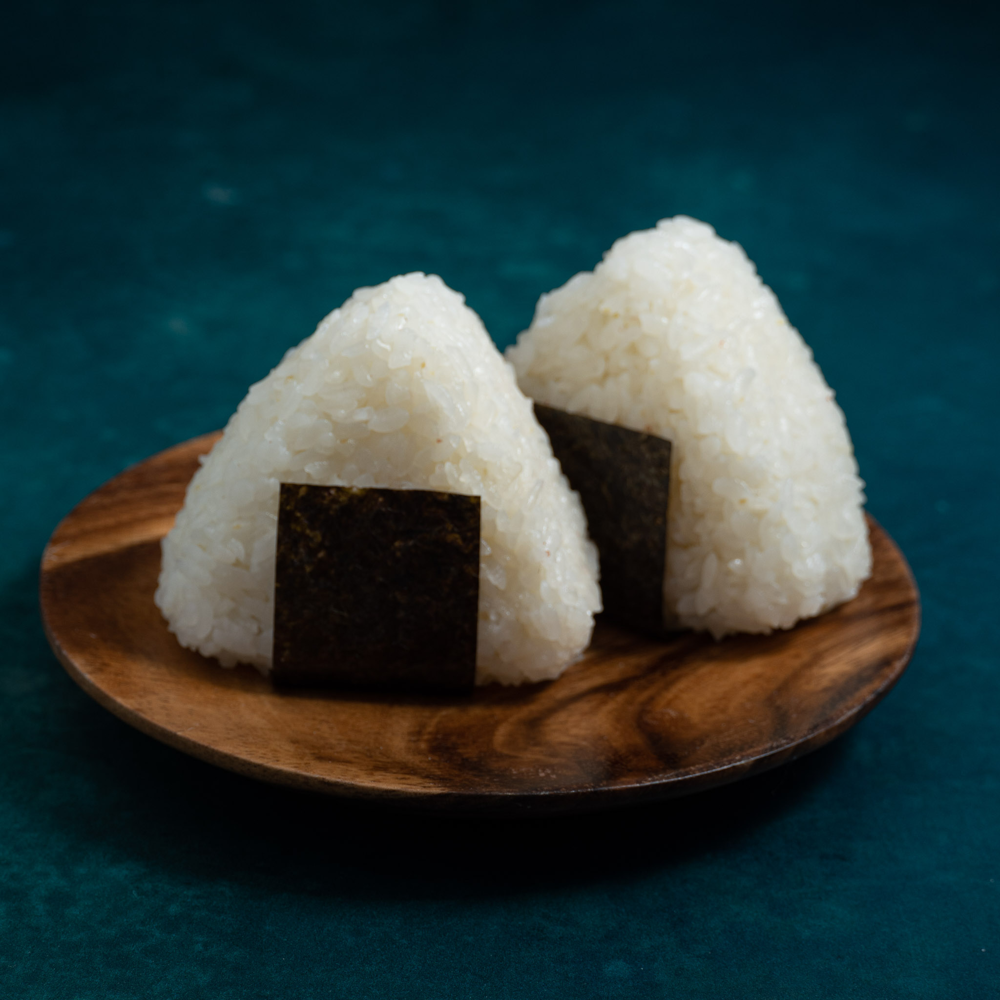

Onigiri

Japanese Rice Balls!
Also known as o-musubi or nigirimeshi,onigiri are Japanese rice ball snacks made from cooked or steamed sushi
rice, furikake seasonings (and sometimes tasty hidden fillings), wrapped a nori seaweed wrapper.
In Japan, they're either made at home in the morning or purchased from a nearby kombini (convenience store), then
taken to work or school as a tasty snack or quick lunch.
Ingredients
- Koshihikari Rice
- Furikake
- Nori
Steps
- Pop your cooked rice into a nice mixing bowl. Add the furikake or rice flavouring and mix through evenly.
Separate the rice into equal portions, big enough to be a large handful each.
- Wet your hands with water and rub together with a pinch or two of salt. This stops the rice sticking to your
hands and helps keep it fresher for longer.
- Take up one portion of rice in your hands.
- If you are hiding some fillings inside, here is where you make an indent, place the ingredients inside and
fold the rice over, then lightly press into a ball.